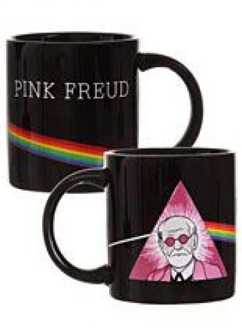

|

Психоанализ (нем. Psychoanalyse) — психологическая теория, разработанная в конце XIX — начале XX века австрийским неврологом Зигмундом Фрейдом, а также чрезвычайно влиятельный метод лечения психических расстройств, основанный на этой теории. Психоанализ расширялся, критиковался и развивался в различных направлениях, преимущественно бывшими коллегами Фрейда, такими как Альфред Адлер и К. Г. Юнг, а позднее неофрейдистами, такими как Эрих Фромм, Карен Хорни, Гарри Стек Салливан, Жак Лакан и др.
Основные положения психоанализа заключаются в следующем:
• человеческое поведение, опыт и познание во многом определены внутренними и иррациональными влечениями;
• эти влечения преимущественно бессознательны;
• попытки осознания этих влечений приводят к психологическому сопротивлению в форме защитных механизмов;
• помимо структуры личности, индивидуальное развитие определяется событиями раннего детства;
• конфликты между осознанным восприятием реальности и бессознательным (вытесненным) материалом могут приводить к психо-эмоциональным нарушениям, таким как невроз, невротические черты характера, страх, депрессия, и так далее;
• освобождение от влияния бессознательного материала может быть достигнуто через его осознание (например, при соответствующей профессиональной поддержке).
Современный психоанализ в широком смысле — это более 20 концепций психического развития человека. Подходы к психоаналитическому терапевтическому лечению различаются столь же сильно, как и сами теории. Термин также обозначает метод исследования детского развития.
Классический психоанализ Фрейда обозначает специфический тип терапии, при котором «анализант» (аналитический пациент) вербализует мысли, включая свободные ассоциации, фантазии и сны, на основании чего аналитик пытается сделать заключение о бессознательных конфликтах, являющихся причинами симптомов и проблем характера пациента, и интерпретирует их для пациента, для нахождения пути разрешения проблем. Специфика психоаналитических интервенций как правило включает конфронтацию и разъяснение патологических защит и желаний пациента.
Теория критиковалась и критикуется с различных точек зрения, вплоть до утверждения, что психоанализ является псевдонаукой, однако он довольно часто практикуется в настоящее время. Психоанализ также получил распространение в философии, гуманитарных науках, литературной и художественной критике как дискурс, метод интерпретации и философская концепция. Он оказал существенное влияние и на формирование идей сексуальной революции.
|